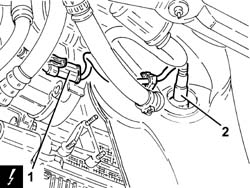
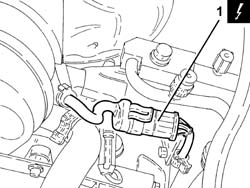
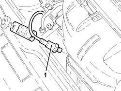
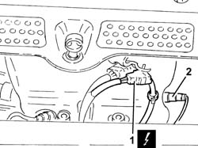
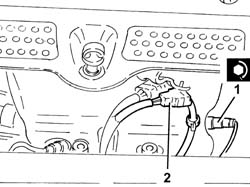

1080B92 left upper lambda sensor r r
- Path
- Procedures > 10 ENGINE > 1080 EXHAUST EMISSION CONTROL SYSTEM > 1080B exhaust emission control system > 1080B92 left upper lambda sensor r r
- Kind
- repair procedure (removal / refitting; the operation number is the code)
- Applies to
- engines: 1.6 TS , 1.8 TS, 2.0 JTS, 2.5 V6, 3.2 V6, 2.0 JTS; all production periods
- Interactive page
- https://sloeber94.github.io/elrnDB-a156/en/#/3237587
Applies to: engines: 2.5 V6, 3.2 V6; all production periods; only with equipment: Euro 3
 Removing
Removing
 Refitting
RefittingPlace the vehicle on a ramp.
Ensure that the ignition key is in the stop OFF, then disconnect the battery negative terminal.
 | Name | Connector |
|---|---|---|
- | Battery |
Proceed with the removal 7055B54 under-engine guard - r r .
1. Disconnect the electrical connection for the left Lambda sensor and release the electrical wiring from its attachments.
| Name | Connector |
|---|---|---|
1 | Lambda sensor on pre-catalyzer |
2. Undo the left Lambda sensor using a suitable spanner and remove it.

Applies to: engines: 2.5 V6, 3.2 V6; all production periods; only with equipment: Euro 3
Refitting
RemovingPlace the left Lambda sensor back in its housing and tighten it to the recommended torque.
 | Fastening | Component | Ø | Value (daNm) |
|---|---|---|---|---|
- | - | LEFT LAMBDA SENSOR | M18 | (Left preconverter side) 4.0 ÷ 5.0 |
Connect the electrical connection for the left Lambda sensor and secure the wiring.
Proceed with the refitting 7055B54 under-engine guard - r r .
Connect the battery terminal (-).
Remove the car from the ramp.
Applies to: engines: 1.6 TS , 1.8 TS; all production periods; only with equipment: Euro 3
Removing
RefittingEnsure that the ignition key is in the OFF postition, then disconnect the battery negative terminal.
| Name | Connector |
|---|---|---|
- | Battery |
1. Disconnect the electrical connection for the left Lambda sensor.
| Name | Connector |
|---|---|---|
1 | Lambda sensor |

Applies to: engines: 1.6 TS , 1.8 TS; all production periods; only with equipment: Euro 3
1. Undo and remove the left Lambda sensor.

Applies to: engines: 1.6 TS , 1.8 TS; all production periods; only with equipment: Euro 3
Refitting
RemovingPlace the left Lambda sensor back in its housing and tighten it to the recommended torque.
| Fastening | Component | Ø | Value (daNm) |
|---|---|---|---|---|
- | - | LEFT LAMBDA SENSOR | M18 | (Exhaust manifold side) 4.0 ÷ 5.0 |
Connect the electrical connection for the left Lambda sensor.
Connect the battery terminal (-).
Applies to: engines: 2.0 JTS, 2.0 JTS; all production periods
Removing
RefittingEnsure that the ignition key is in the OFF postition, then disconnect the battery negative terminal.
| Name | Connector |
|---|---|---|
- | Battery |
1. Disconnect the electrical connection for the left Lambda sensor and release it from the mounting bracket.
| Name | Connector |
|---|---|---|
1 | Lambda sensor on pre-catalyzer |
2. Undo and remove the left Lambda sensor.

Applies to: engines: 2.0 JTS, 2.0 JTS; all production periods
Refitting
Removing1. Place the left Lambda sensor back in its housing and tighten it to the recommended torque.
| Fastening | Component | Ø | Value (daNm) |
|---|---|---|---|---|
1 | - | RIGHT LAMBDA SENSOR | M18 | 4.0 ÷ 5.0 |
2. Connect the electrical connection for the left Lambda sensor and secure it to the mounting bracket.

Applies to: engines: 2.0 JTS, 2.0 JTS; all production periods
Connect the battery terminal (-).
Topics linked from this page (4)
- 7055B54 under-engine guard - r r
- A1B Battery ( BATTERY NEGATIVE )
- K15 Lambda sensor on pre-catalyzer
- K39 Lambda sensor